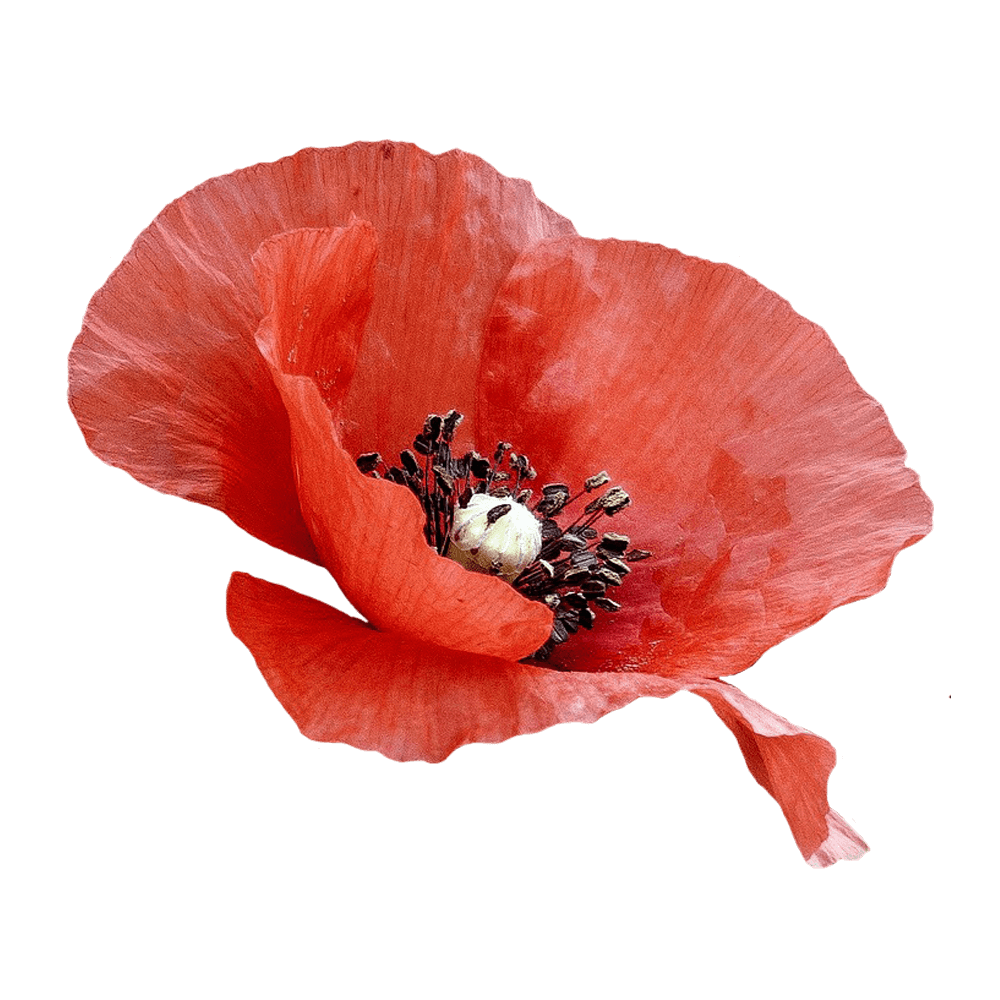

Playfair is a transitional design. Together with developments in printing technology, ink, and paper making, it became to print letterforms of high contrast and delicate hairlines.
This design lends itself to this period, and while it is not a revival of any particular design, it takes influence from the designs of John Baskerville and from ‘Scotch Roman’ designs.
The Playfair project is led by Claus Eggers Sørensen, a type designer based in Amsterdam, Netherlands.
Font available from Google Fonts.
Poppies are symbolic and used to remember the Armistice Day of World War 1, now known as Remembrance Day. Now it is celebrated in the Commonwealth for those who died in all wars.
Some types can be grown and used to make the drug opium. Poppy seeds contain small quantities of both morphine and codeine. These are pain-relieving drugs that are still used today.
The flower colour of Poppy species includes white, pink, yellow, orange, red and blue.
Poppies have long been used as a symbol of sleep, peace, and death: Sleep because the opium extracted from them is a sedative, and death because of the common blood-red colour of the red Poppy in particular. In Greek and Roman myths, Poppies were used as offerings to the dead.